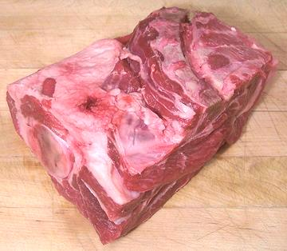
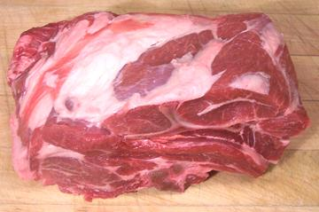
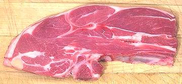

|


|
[Spala (Italian)] This is the sheep equivalent of the beef chuck roast, but goes lower and includes the shoulder joint and part of the leg bone (left in photo). The photo specimen was 7 inches long, 5 inches wide, 4 inches thick and weighed 2.8 pounds. This cut has a complex bone structure and some rather large fat deposits. The shoulder is also sold in a larger form including 4 ribs and the whole shoulder blade, weighing a little over 4 pounds. Buying: This cut can be found in just about any market that carries lamb, but it's likely to cost significantly less from a market that serves communities that use a lot of lamb. Turkey, Armenia, Middle East, North Africa, Pakistan, etc. Cooking: Because of its complex structure and significant internal fat deposits, the best strategy for this cut is slow oven roasting until the meat pulls easily from the bone. I have, however, also parted this cut for meat cubes and soup stock. Yield: The 2 pound 12 oz shoulder in the photos yielded:
A larger cut from Australia included 4 partial ribs and the whole shoulder blade, yielded:
More on Lamb / Mutton Cuts. |

[Chuleton de Borrego (Spanish)]
This is the sheep version of the beef 7 bone steak, complete with a 7 shaped slice of the shoulder blade (in some pieces - bone pattern varies from slice to slice). It is sliced from the Lamb Shoulder Roast. The photo specimen was 8 inches long, 3-1/2 inches wide, 3/4 inch thick and weighed 8-1/2 ounces.
Buying: Many markets that sell the Lamb Shoulder Roast will also cut some into steaks.
Cooking: This cut is suitable for pan frying, broiling or cooking on the grill. As with all lamb, it will tend to splatter, so cover the floor around your stove with newspapers if you pan fry.
Yield: based on a 2.77 pound tray (both fat and bones include
some unrecoverable meat):
| Meat | 1# 5-1/4 oz | 48% | |
| Bones | class=tbl12-3/8 oz | 28% | For the soup pot |
| Fat | 11-1/4 oz | 25% | 3-1/2 oz rendered fat |
More on Lamb / Mutton Cuts.
as_shouldz 091015 - www.clovegarden.com